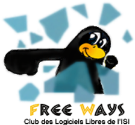
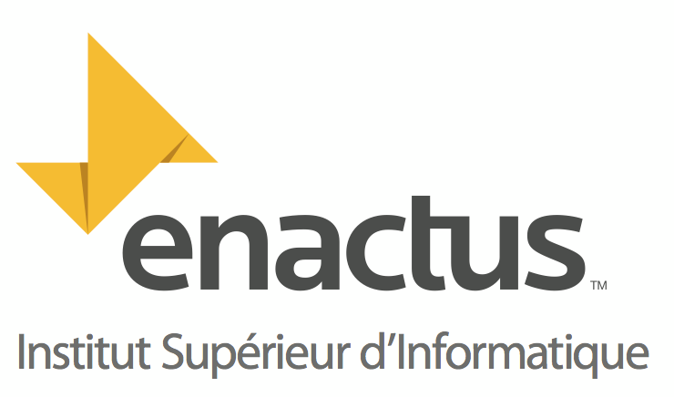

La vie associative à l'ISI est animée principalement par les clubs et les différentes activités et associations sportives.
La vie des clubs dépend du dynamisme de l’initiative des étudiants, ils sont appelés à s’y impliquer activement. Le mercredi après-midi est réservé aux activités sportives et associatives.
Pour les étudiants qui désirent pratiquer des activités sportives, l’ISI met à leur disposition deux enseignants de sport sont chargés de l’encadrement
Club Freeways

Le club de logiciels libres FreeWays de l’Institut Supérieur d’Informatique (ISI) a été crée en Janvier 2004 dans l’objectif de réunir la population des étudiants intéressés à promouvoir la philosophie du libre et de développer chez chacun d'eux le sens de la recherche et du travail en groupe.
Nos activités au sein du Club intègrent tant l’aspect éducatif que l’aspect professionnel. En ce sens, nous organisons des journées concernant l’esprit du logiciel libre comme la journée “Migration des logiciels propriétaires vers les logiciels libres” aussi nous participons dans les manifestations libre.
Nous nous investissons par la même occasion sur d’autres activités à l’exemple des conférences et des ateliers sensibilisants sur le libre. Aussi, nous apportons une aide pour les débutants sur les aspects techniques et nous facilitons l'acquisition des distributions et des outils libres.
Enactus ISI

ENACTUS ISI(anciennement SIFE ISI) est un groupe d'étudiants de l'Institut Supérieur d'Informatique de Tunis , issus des différentes branches de l'établissement Notre école participe chaque année à la compétition ENACTUS depuis 2011 .
Nous avons pour objectif de développer nos qualités de leadership,nos aptitudes à la communication et au travail en équipe,pur nous familiariser avec le monde de l'entreprise et ses pratiques selon le principe Learning by doing (apprendre par pratique). Et ce en créant et en développant nos projets au profit de personnes dans le besoin et familles nécessiteuses telles que des femmes rurales, des diplomés au chomage et des handicapés.
Nous travaillons pour la supervision de Madame la conseillère pédagogique,enseignante à Institut Supérieur d'Informatique, Comme le programme ENACTUS a été introduit en Tunisie sous l'égide du CJD et de l'UTICA,nous bénéficions de conseils des représentants du monde des affaires afin de créer des actvités innovantes , mais aussi pour apprendre en équipe,les principes et les valeurs de l'entreprise privée.
Enactus ISI a été vice champion suite à sa première participation à la compétition nationale de 2011 et a ètè déclarée champion de la Tunisie en 2012.Nous avons représenté notre pays aux Etats Unis ou s'est déroulée la compétition internationale.
Notre équipe a été la première équipe a été la première équipe tunisienne à se classer troisième dans sa ligue grace aux projets qu'elles a créeset grace à son acharnement et à sa bonne volonté.
Bibliothèque
La Bibliothèque de l’ISI , couvre toutes les disciplines enseignées sur tous types de supports d’Information. Riche de 5.000 volumes, elle offre un service de prêt (à travers un guichét). Des personnels sont au service des étudiants, des enseignants, et des chercheurs, ils ont pour mission de récupérer l’ouvrage emprunté.
La Bibliothèque propose aux étudiants une collection de livres de consultation traitant de diverses spécialités : Informatique, Mathématique, Physique, Langue française et anglaise; des ouvrages de base dans le domaine de l’Economie et du Droit de l’Homme et cela concernant tous les niveau d’études; les Memoires de Projet de Fin d'Etudes, les Memoires de Mastère Spécialisé ainsi que des parutions récentes de certains titres de révues en version imprimée.
La Bibliothèque informe sur la nouveauté des ouvrages acquis. Le fonds est repertorié dans unebase de données qui englobe tous les ouvrages.
Règlement interne
Horaire d’ouverture :
- De lundi au vendredi de 8h00 à 18h00
- Samedi de 8h00 à 14h00
Prêt et consultation :
- Les livres et les périodiques conservés en magasin peuvent être consultés comme suit :Pour les Enseignants de l’Institut 2 à 3 documents pour un delai de 15 jour maximum, renouvelable une seule fois après avoir l’autorisation du responsable de la bibliothèque.
- Pour les Etudiants : pour emprunter un document, il faut remplir un bulletin de consultation accompagné de la carte de la bibliothèque.L’emprunt à domicile n’est autorisé que pour le week-end.
La Bibliothèque offre des services d’aide et de soutien à la recherche.
Aussi la salle de lecture est équipée des prises réseau pour les étudiants disposants d’ordinateurs portables personnels (et qui permet en outre l’accès à internet).
Les documents exclus du prêt sont :
- Les périodiques
- Les ouvrages des références telsque les Dictionnaires
- Les documents sur lesquels figure la mention « exclu du prêt ».
La Bibliothèque de l’Institut est un lieu d’étude et de recherche :
-
Le bruit est interdit : tout étudiant doit respecter les bonnes conditions d’étude des lecteurs et de travail du Personnel.
-
La consommation de la nourriture et des boissons est interdite également.
-
Par respect envers les autres étudiants et envers le personnel, le tabagisme y est interdit.
Quelques Règles :
-
Le prêt est strictement personnel : chaque emprunteur est personnellement responsable de son emprunt.
-
L’étudiant qui emprunte pour quelqu’un d’autre ou qui fait rendre des documents empruntés par quelqu’un d’autre en assume la totale responsabilité. Toute perte ou détérioration de ces documents lui incombera.
-
Tout document perdu ou déterioré doit être remplacé ou remboursé.
Les Pénalités :
-
Les livres rendus en retard voient leurs emprunteurs sanctionnés par des suspensions de prêt, leur carte de bibliothèque peut, être retirée pour une période allant de 1 à 3 mois.